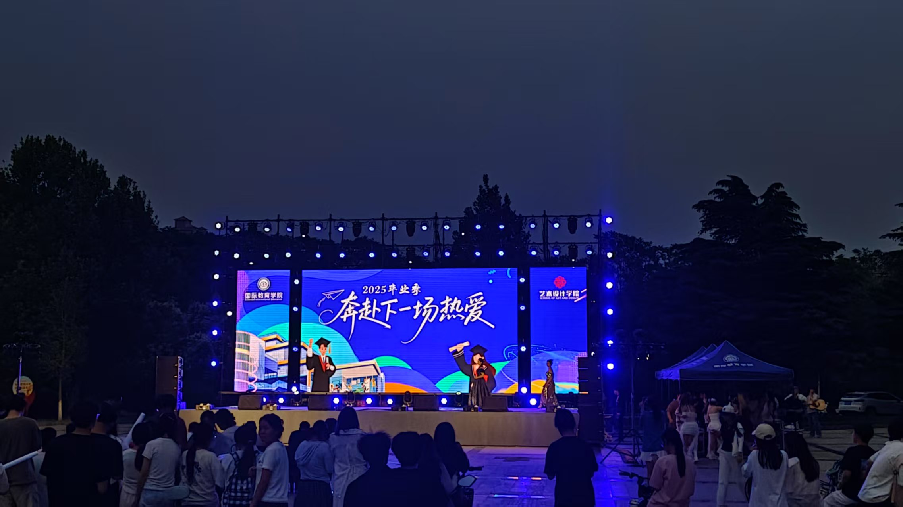
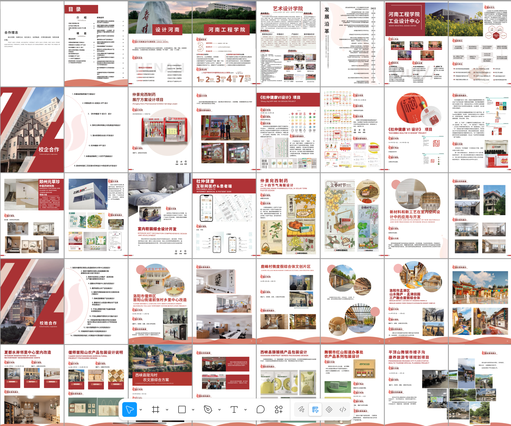
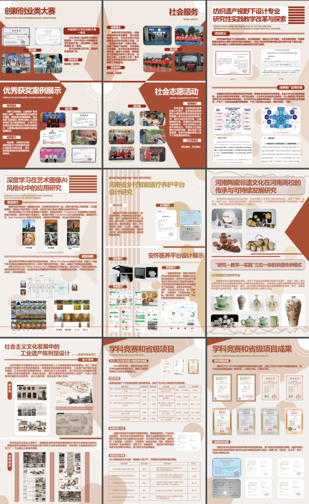

舒心养老服务响应系统
UI/UX · 三端协同
常用设计工具与平台
从用户研究到高保真原型，打造兼具功能与美感的数字产品体验。
海报、宣传页、画册与品牌视觉，用视觉语言讲好每一个故事。
将 AI 融入设计工作流，从创意生成到视觉落地，提升效率与表现力。
UI/UX · 平面海报 · 宣传册 · AI 辅助设计


AI 驱动 · 全流程生成
本小程序是一款以太昊陵伏羲文化为主题的文化传播应用，涵盖数字百科、AR 庙会体验、AI 创意工坊、虚拟逛庙会等核心功能模块。
⚡ 核心亮点：本小程序从 UI 界面设计、页面组件搭建、业务逻辑编写到完整可执行源代码均由 AI 全程独立生成；本人仅负责梳理产品功能需求、定义视觉设计风格、审核 AI 输出内容的风格合规性，仅做少量细节微调与项目整体成果验收工作。这是一个完整的「人机协同」创作实践案例——人类负责创意与把控，AI 负责执行与落地。

首页 · 探索发现

虚拟逛庙会

AI 创意工坊

文化百科
梳理产品功能模块（首页探索/AR体验/AI工坊/文化百科），定义信息架构与交互逻辑，将需求拆解为精准的 AI 提示词（Prompt）。
定义视觉风格关键词（中式典雅/暖棕色调/圆角卡片/渐变装饰），由 AI 根据提示词批量输出 WXML/WXSS 页面结构与样式代码。
AI 自动编写页面跳转路由、数据绑定、事件处理、API 调用等完整 JavaScript 业务逻辑，实现可运行的源代码。
逐页审查 AI 输出的视觉还原度与交互流畅性，对不符合设计规范的部分提出修改指令并做少量手动微调，最终完成部署验收。
总结：这个项目的核心价值不在于小程序本身的功能复杂度，而在于它验证了一套「需求→提示词→AI 产出→人工审核→迭代优化」的完整人机协同创作流程。作为设计者，角色从「执行者」转向了「导演」——把控方向、定义标准、验收成果。这正是 AI 时代创作者的核心能力。


我是一名数字媒体艺术（交互方向）专业的学生，2026 届毕业。性格活泼外向，有亲和力，热爱艺术、绘画与游戏，具备很强的自律和学习能力。
我的设计领域覆盖 UI/UX 界面设计、平面视觉海报、宣传册与画册排版、PVC 喷绘输出，以及 AI 工具辅助设计全流程。从用户研究到视觉落地，从创意构思到物料输出，力求每个环节都做到专业与用心。
我相信设计不只是让东西好看——更重要的是解决问题、传达信息、建立连接。无论是为一款 App 打磨交互细节，还是为一场活动设计主视觉海报，我都希望能通过设计为人带来更好的体验。
2026 届数字媒体艺术（交互）应届生，精通 UI 交互全流程设计；善用 AIGC 完成小程序界面与源码产出，独立搭建响应式作品集，兼具平面设计能力，擅长需求拆解与人机协同。

开展用户调研拆解项目需求，挖掘用户痛点，锚定设计目标，为项目落地确立清晰方向。

使用 Figma 完成原型到高保真全流程设计，搭建统一视觉体系，精细化打磨界面细节与交互体验。

运用 AI 工具生成视觉方案、小程序界面与可执行源码，负责风格审核、细节优化、功能迭代与项目验收。
校企合作 · 真实项目
ShuXin Elderly Care Service System · 杭州舒心养老
在校期间为杭州舒心养老服务有限公司承接的真实商业项目，从用户调研、竞品分析到信息架构、界面设计全程参与。设计并落地了老人端（服务预约/健康档案/紧急求助）、商家端（订单管理/服务接单/收益统计）与社区管理端（人员调度/数据看板/资源分配）三端协同的完整产品体系，真正实现从课堂到产线的闭环实践。


比赛作品 · VR体验设计
弥补遗憾的虚拟现实体验系统
比赛作品，一个让用户通过 VR+BCI（脑机接口）重新体验人生遗憾的沉浸式系统。包含完整的产品概念、交互流程设计与高保真界面，获2025年省赛三等奖。


实践项目 · 服务设计
Digital Rural Elderly Care Platform · 安阳医养
面向安阳农村老年群体的数智化乡村医疗养护平台设计。从用户研究、数据分析出发，构建「嵌入式平台＋分角色协同」的服务框架，涵盖康养生活服务、家庭远程视频、娱乐视听、远程医疗、大数据档案与志愿资源六大功能模块，推动乡村养老从「个体事务」向「系统治理」演进。


排版 · 物料设计
从毕业歌会背景到学院宣传册、展墙设计与各类海报，涵盖多种视觉创作形式。




排版 · 物料设计
扫码添加好友，期待与你的交流

手机用户可长按保存图片后在微信中识别
扫码添加好友 / 发起临时会话

手机用户可长按保存图片后在QQ中识别